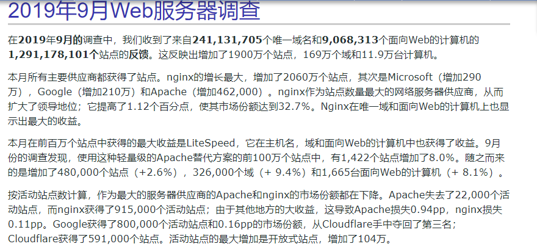
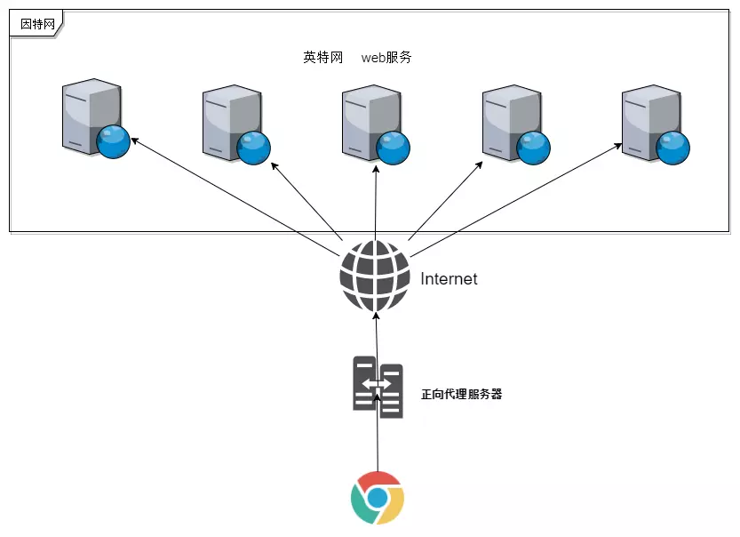
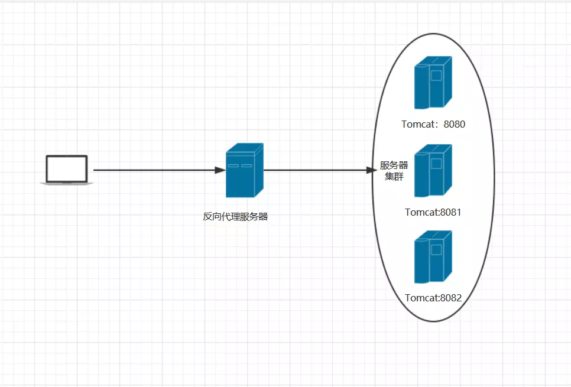
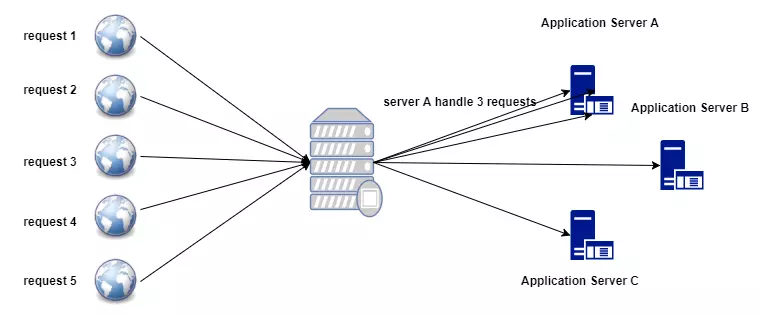
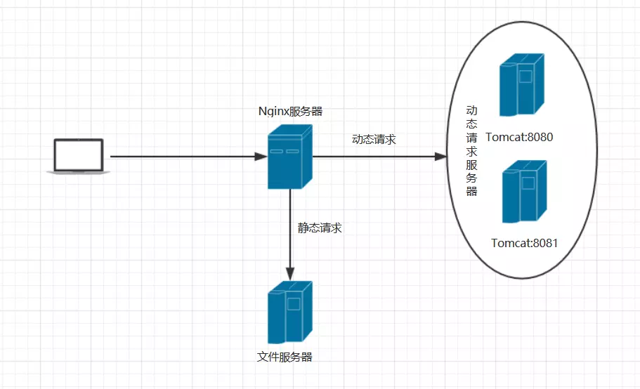

深入浅出Nginx
简介
Nginx是一款轻量级的Web服务器、反向代理服务器，由于它的内存占用少，启动极快，高并发能力强，在互联网项目中广泛应用。
目前有很多国内网站采用 Nginx 作为 Web 服务器，如国内知名的新浪、163、腾讯、Discuz、豆瓣等。据 netcraft 统计，Nginx 排名第 1，约占 32.7％ 的份额(参见：http://news.netcraft.com/archives/category/web-server-survey/ )

Nginx 因为它的稳定性、丰富的模块库、灵活的配置和低系统资源的消耗而闻名．业界一致认为它是 Apache2.2＋mod_proxy_balancer 的轻量级代替者，不仅是因为响应静态页面的速度非常快，而且它的模块数量达到 Apache 的近 2/3。

Nginx特点
Nginx 做为 HTTP 服务器，有以下几项基本特性：
- 处理静态文件，索引文件以及自动索引；打开文件描述符缓冲．
- 无缓存的反向代理加速，简单的负载均衡和容错．
- FastCGI，简单的负载均衡和容错．
- 模块化的结构。包括 gzipping, byte ranges, chunked responses,以及 SSI-filter 等 filter。如果由 FastCGI 或其它代理服务器处理单页中存在的多个 SSI，则这项处理可以并行运行，而不需要相互等待。
- 支持 SSL 和 TLSSNI．
Nginx其他特点：
跨平台：Nginx代码完全用C语言从头写成，已经移植到许多体系结构和操作系统，包括：Linux、FreeBSD、Solaris、Mac OS X、AIX以及Microsoft Windows。
配 置异常简单：非常的简单，易上手。
Nginx 专为性能优化而开发，性能是其最重要的考量,实现上非常注重效率 。它支持内核 Poll 模型，能经受高负载的考验,有报告表明能支持高达 50,000 个并发连接数。
Nginx代理和后端Web服务器间无需长连接；
Nginx 具有很高的稳定性。其它 HTTP 服务器，当遇到访问的峰值，或者有人恶意发起慢速连接时，也很可能会导致服务器物理内存耗尽频繁交换，失去响应，只能重启服务器。例如当前 apache 一旦上到 200 个以上进程，web响应速度就明显非常缓慢了。而 Nginx 采取了分阶段资源分配技术，使得它的 CPU 与内存占用率非常低。Nginx 官方表示保持 10,000 个没有活动的连接，它只占 2.5M 内存，所以类似 DOS 这样的攻击对 Nginx 来说基本上是毫无用处的。就稳定性而言,Nginx 比 lighthttpd 更胜一筹。
Nginx 支持热部署。它的启动特别容易, 并且几乎可以做到 7*24 不间断运行，即使运行数个月也不需要重新启动。你还能够在不间断服务的情况下，对软件版本进行进行升级。
Nginx接收用户请求是异步的，即先将用户请求全部接收下来，再一次性发送到后端Web服务器，极大减轻后端Web服务器的压力。
Nginx 采用 master-slave 模型,能够充分利用 SMP 的优势，且能够减少工作进程在磁盘 I/O 的阻塞延迟。当采用 select()/poll() 调用时，还可以限制每个进程的连接数。
Nginx 代码质量非常高，代码很规范，手法成熟，模块扩展也很容易。特别值得一提的是强大的 Upstream 与 Filter 链。Upstream 为诸如 reverse proxy,与其他服务器通信模块的编写奠定了很好的基础。而 Filter 链最酷的部分就是各个 filter 不必等待前一个 filter 执行完毕。它可以把前一个 filter 的输出做为当前 filter 的输入，这有点像 Unix 的管线。这意味着，一个模块可以开始压缩从后端服务器发送过来的请求，且可以在模块接收完后端服务器的整个请求之前把压缩流转向客户端。
Nginx 采用了一些 os 提供的最新特性如对 sendfile (Linux2.2+)，accept-filter (FreeBSD4.1+)，TCP_DEFER_ACCEPT (Linux 2.4+)的支持，从而大大提高了性能。
代理
Nginx通常被用来实现正向代理,反向代理，负载均衡，以及动静分离这四个功能。
- 正如大家所知，由于某些不可抗拒的因素，我们没有办法在中国大陆直接访问Google等网站，或者说访问GitHub这些国外网站网速比较慢，不论是正向代理还是反向代理，都其实可以看作是代理模式的衍生版本。
正向代理
由于防火墙的原因，我们并不能直接访问谷歌，那么我们可以借助VPN来实现，这就是一个简单的正向代理的例子。这里你能够发现，正向代理“代理”的是客户端，而且客户端是知道目标的，而目标是不知道客户端是通过VPN访问的。
阿呆这几天愁眉苦脸的，工作中某些业务需要用到谷歌邮箱，可是现在别说谷歌邮箱了，谷歌都打不开，这可急坏了阿呆，正当阿呆一筹莫展之际，突然想到二呆刚被公司派去俄罗斯北极圈推销冰箱了，自己上不了谷歌，但是二呆能上啊，而且二呆的电脑并没有被限制访问，于是阿呆就想出了一个天才的办法，阿呆在公司远程控制二呆的电脑访问Google邮箱，这么一来问题便得到了完美解决。

我们首先请求代理服务器，然后代理服务器帮我们去快速访问国外的网站，对于这种代理方式，我们就称之为正向代理。请记住，上面说到代理模式的两个角色中，我们当前的角色为 被代理者，也就是浏览器这个角色。更重要的是，正向代理的本质是我们去请求外部的资源，如果以生产者、消费者模式来区分，我们属于消费者。
总结
- 1、正向代理，我们的角色是 被代理者
- 2、正向代理，我们不对外提供服务，反而是对外消费服务，属于消费者
反向代理
正向代理中我们的代理服务器是作为一个消费者存在的，而反向代理中我们则对外提供服务
二呆从俄罗斯回来之后，业绩上是一无所获，好在公司不至于太过绝情，于是给了二呆一次将功补过的机会。工作内容也很简单，要求二呆去组织一个暖气事业部为将来非洲的暖气业务做准备，这当然没问题，刚开始的时候，二呆感觉还好，因为公司部门不多，所以可以很方便叫某个人的编号去安排工作，比如8080，你去处理这个请求，8081你去处理这个，8082你去问问非洲人民的意见怎么样，可是慢慢随着公司在此项目上投入的越来越多，部门员工也排到了10000多，这下二呆还要记住每个人的编号就不太现实了，于是二呆设立了一台代理服务器，让代理服务器去记住这些人的编号和功能，而二呆只需要记住代理服务器的编号就行了，于是整个部门在二呆眼里慢慢变成了一个整体，而具体有多少人二呆则是完全不关心了，甚至二呆都不需要知道部门中都有哪些员工，如图所示:

看完上面的图片，请你想象一下这么一个场景，假设你现在是某公司技术总监，你们公司需要对外提供一套web服务，那么你打算怎么做呢？
答案是可以通过反向代理来完成。通常你们公司拥有自己的IDC机房，机房通讯通常采用局域网交换机，internet网用户请求是无法直接访问到局域网内的web服务的，因此这个时候，你需要一台反向代理服务器来接收internet web请求，然后将请求分发到局域网中的不同主机上进行处理，处理完成之后再做出响应。因此，反向代理大概就是这么一个场景。请记住，反向代理中，我们的角色是 局域网 web服务。
- 总结
- 1、反向代理，我们的角色是 局域网 web服务
- 2、反向代理，我们对外提供服务，属于服务提供者
区别
而反向代理和正向代理最大的区别就是客户端完全感知不到代理的存在，比如我们正向代理访问Google，可能需要在本地软件比如小飞机上设置相应的代理服务器的地址和端口，而反向代理则完全不需要设置，比如淘宝，当客户端去访问淘宝的时候，可完全不知道淘宝开了多少台服务器，每个服务器的地址是多少，只需要像往常一样在浏览器中输入：taobao.com就行，至于双十一将至，阿里又额外开了多少台服务器，客户端则是完全感知不到的，所有的请求则是通过代理服务器通过负载均衡的方式分发到不同的服务器中了。
一句话总结:
- 反向代理服务器和目标服务器对外就是一个服务器，暴露的是代理服务器 地址，隐藏了真实服务器 IP 地址。
负载均衡
说到负载均衡，我想说它天生就是不公平的。为什么这么说呢？请你想象这么一个场景，一块蛋糕切成5份，现在要将它分给A、B、C3个人，如果平均分，则一个人5/3份蛋糕，碰巧这个时候A中午没有吃饭，能多吃几份，B、C肚子偏饱，1份即可，基于不公平原则，我们分给A3份蛋糕，B、C个一份，这样按照一定策略将资源进行划分的方式，是一种均衡的策略。
在web应用中，一个web应用（或者说某个服务）在生产环境中一般是集群部署，然后采用负载均衡硬件(F5)或者软件（nginx）将请求分发到不同的服务主机中进行处理，很明显，这里的蛋糕就相当于我们的web request，假设有5个request进来，基于一定的均衡策略，我们可能会将其中的3个request交给A服务器去处理，B、C服务器各处理1个request。下面我画张图片简单说明这个模型：

负载均衡其实是在反向代理基础之上实现的，如果说反向代理的目的是为了隐藏真实服务器的IP地址的话，负载均衡则是提供了一组策略来将请求从代理服务器上分发到这些真实的服务器上去。
使用负载均衡的好处
- 优化资源利用率
- 最大化吞吐量
- 减少延迟
- 系统的伸缩性和可靠性也得到了相应的保障。
负载均衡策略
在Nginx中，一共提供了4种负载均衡策略供开发者灵活选择：
- 轮询(默认方式): 每个请求按时间顺序逐一分配到不同的后端服务器，如果后端服务器 down 掉，能自动剔除。
- 权重(weight): weight 代表权重,默认为 1,权重越高被分配的客户端越多,权重越大，能力越大，责任越大，处理的请求就越多。
- ip_hash：每个请求按访问 ip 的 hash 结果分配，这样每个访客固定访问一个后端服务器，可以解决 session 的问题。
- 最少连接数： 最少连接，也就是说nginx会判断后端集群服务器中哪个Server当前的 Active Connection 数是最少的，那么对于每个新进来的request,nginx将该request分发给对应的Server.
一句话总结:
增加服务器的数量，然后将请求分发到各个服务器上，将原先请求集中到单个服务器上的情况改为将请求分发到多个服务器上，将负载分发到不同的服务器，也就是我们所说的负载均衡
负载均衡可能带来的问题？
负载均衡所带来的明显的问题是，一个请求，可以到A server，也可以到B server，这完全不受我们的控制，当然这也不是什么问题，只是我们得注意的是：用户状态的保存问题，如Session会话信息，不能在保存到服务器上。
动静分离
当我们的应用初具规模，服务器后端需要面对大量请求的话，原来的动静混合打包发布的方式就不再那么适用了，因为我们服务器一边需要去处理客户端发过来的动态请求，比如数据库的查询，计算等，又同时要处理客户端发过来的静态请求，比如图片，css样式等静态文件，大量的请求毫无疑问会增加我们后端的压力，挤占我们用于处理动态请求的性能，为了解决这个问题呢，于是就有了动静分离这种部署的方式。
动静分离就是把很少会发生修改的诸如图像，视频，css样式等静态资源文件放置在单独的服务器上，而动态请求则由另外一台服务器上进行，这样一来，负责动态请求的服务器则可以专注在动态请求的处理上，从而提高了我们程序的运行效率，与此同时，我们也可以针对我们的静态资源服务器做专属的优化，增加我们静态请求的响应速度。
Nginx 动静分离简单来说就是把动态跟静态请求分开，不能理解成只是单纯的把动态页面和静态页面物理分离。严格意义上说应该是动态请求跟静态请求分开，可以理解成使用 Nginx 处理静态页面，Tomcat 处理动态页面。动静分离从目前实现角度来讲大致分为两种，
一种是纯粹把静态文件独立成单独的域名，放在独立的服务器上，也是目前主流推崇的方案；
另外一种方法就是动态跟静态文件混合在一起发布，通过 nginx 来分开，具体如何配置，后期Nginx实战会详细说明。
如下图所示:

Nginx的Master-Worker模式
启动Nginx后，其实就是在80端口启动了Socket服务进行监听，如图所示，Nginx涉及Master进程和Worker进程

Master进程的作用是？
读取并验证配置文件nginx.conf；管理worker进程；
Worker进程的作用是？
每一个Worker进程都维护一个线程（避免线程切换），处理连接和请求；注意Worker进程的个数由配置文件决定，一般和CPU个数相关（有利于进程切换），配置几个就有几个Worker进程。
Nginx如何做到热部署？
所谓热部署，就是配置文件nginx.conf修改后，不需要stop Nginx，不需要中断请求，就能让配置文件生效！（nginx -s reload 重新加载/nginx -t检查配置/nginx -s stop）
通过上文我们已经知道worker进程负责处理具体的请求，那么如果想达到热部署的效果，可以想象：
方案一：
- 修改配置文件nginx.conf后，主进程master负责推送给woker进程更新配置信息，woker进程收到信息后，更新进程内部的线程信息。（有点valatile的味道）
方案二：
- 修改配置文件nginx.conf后，重新生成新的worker进程，当然会以新的配置进行处理请求，而且新的请求必须都交给新的worker进程，至于老的worker进程，等把那些以前的请求处理完毕后，kill掉即可。
Nginx采用的就是方案二来达到热部署的！
Nginx如何做到高并发下的高效处理？
上文已经提及Nginx的worker进程个数与CPU绑定、worker进程内部包含一个线程高效回环处理请求，这的确有助于效率，但这是不够的。
作为专业的程序员，我们可以开一下脑洞：BIO/NIO/AIO、异步/同步、阻塞/非阻塞…
要同时处理那么多的请求，要知道，有的请求需要发生IO，可能需要很长时间，如果等着它，就会拖慢worker的处理速度。
Nginx采用了Linux的epoll模型，epoll模型基于事件驱动机制，它可以监控多个事件是否准备完毕，如果OK，那么放入epoll队列中，这个过程是异步的。worker只需要从epoll队列循环处理即可。
Nginx挂了怎么办？
Nginx既然作为入口网关，很重要，如果出现单点问题，显然是不可接受的。
答案是：Keepalived+Nginx实现高可用。
Keepalived是一个高可用解决方案，主要是用来防止服务器单点发生故障，可以通过和Nginx配合来实现Web服务的高可用。（其实，Keepalived不仅仅可以和Nginx配合，还可以和很多其他服务配合）
Keepalived+Nginx实现高可用的思路：
第一：请求不要直接打到Nginx上，应该先通过Keepalived（这就是所谓虚拟IP，VIP）
第二：Keepalived应该能监控Nginx的生命状态（提供一个用户自定义的脚本，定期检查Nginx进程状态，进行权重变化,，从而实现Nginx故障切换）